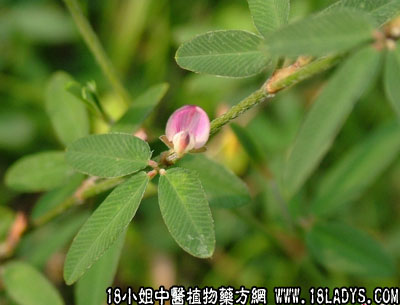

别名：孩儿草。
植物名：鸡眼草。
生长环境：本品为一年生或多年生，披散的草本。生于山坡、田垄上，林中旷地、路旁等向阳地方。
分布：日本、朝鲜、越南和我国东南和西南部各省。
入药部分：全草。
采集期：夏、秋。
自采地点：基边、山岗。
性味：性微凉、去瘀生新。
主治、用量和用法：1、小儿疳积：干用3至于5钱，清水煎服，或配独脚金1至2钱，加蜜枣同煎；2、跌打肿痛，配伍用。
验方：（治跌打肿痛方）人字草5钱、金牛根5钱、寮刁竹3钱、大还魂5钱、小还魂5钱、毛麝香5钱，共为末，加酒煮热敷患处。内服用1钱，加酒适量炖服。
（方解）本方人字草、大还魂、小还魂开腠理以祛邪；毛麝香、寮刁住、金牛根祛风消肿，通络止痛，共为细末，酒煮热敷，以助其药力。
（方歌）跌打肿痛人字草，大小还魂毛麝保，寮刁竹与入地牛，祛风通络止痛好。
按：此药别名原来是孩儿草，只因20年前民间从此药代孩儿草，成为习惯，使原药孩儿草反被此药代替，此药又可治疗鹭鸶鸟受伤积瘀，用法：鲜用，捣烂，加酒煮热敷患处。